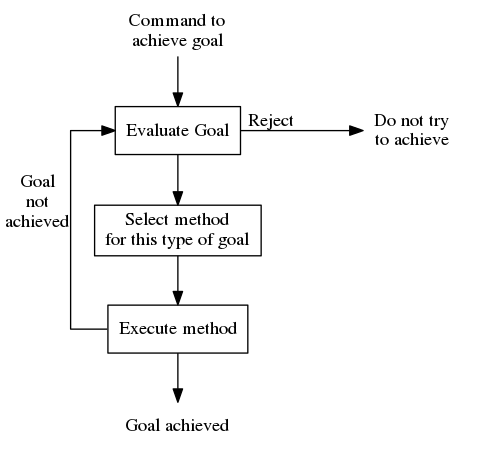

General Problem Solver in Common Lisp
Table of Contents
PREFACE
The computer code here is not original to me. and this document reflects several of my ongoing projects:
- Learning 'classic' AI by working through Peter Norvig's Paradigms of Artificial Intelligence: Case Studies in Common Lisp. Norvig's book is the source for the Lisp code in this project.
- Learning more Emacs in general and org-mode in particular.
- Developing a work process around Literate Programming.
INTRODUCTION
The General Problem Solver was developed in 1957 by Alan Newell, Cliff Shaw and Herbert Simon. The paper associated with their initial work is A Report on a General Problem Solving Program. However, the code in this version is based on Chapter 4 of Paradigms of Artificial Intelligence: Case Studies in Common Lisp.
Outside of historical value, the General Problem Solver is deemed a failure due to the likelihood of combinatorial explosion. But as I work through the code base, I can't help but appreciate the soundness of its program structure and logic…it was developed years before the discovery of NP-hard and it seems like an approach that at least allows for solving simple problems in a straight forward way. This is due, I think to the quality of its abstractions over state and mutating it.
GPS Main Components
- A vocabulary for talking about the task environment: operators, objects, difference, feature, etc.
- A vocabulary for dealing with the organization of problem-solving processes: goal, method, evaluation.
- Programs defining the terms of the problem solving vocabulary in terms of the task environment vocabulary.
- A set of correlative definitions applying the task-environment vocabulary to a particular domain environment.
Goal Types
- Transform
object aintoobject bby applying operators from the task environment. An example is proof from axioms. - Apply
operator qtoobject aor an object obtained from a by admissible transformations. An example is integrating an expression. - Reduce the difference (distance) between
object aandobject bby transformingobject a.
Heuristics
The main heuristic is the principle of sub-goal reduction: reduce hard goals to sets of easier goals. This assumes that the difference between the current state and the goal can be determined; operators have partial effects on the environment and some portions always remain unchanged by each operator; some differences are harder to effect than others and so it is good practice to eliminate hard differences at the cost of introducing easier differences so long as progress is made.
Executive Structure of GPS
Make the diagram using Graphviz's Dot language.
digraph G {
size="5,5";
ratio=1.1;
a[label="Command to\nachieve goal", shape=plaintext];
b[label="Evaluate Goal", shape=box];
bb[label="Do not try\nto achieve", shape=plaintext];
c[label="Select method\nfor this type of goal", shape=box];
d[label="Execute method", shape=box];
e[label="Goal achieved", shape=plaintext];
splines=ortho;
{
a -> b -> c -> d -> e;
}
rank=same {b, bb}
b:e -> bb:w [label="Reject"];
d:w -> b:w [xlabel="Goal\nnot\nachieved", constraint=false];
}

Source code for this diagram is written in graphviz and contained in the literate programming file.
PROCESS STAGES
Description
The description of problem solving uses the theory of means-ends analysis. The problem is stated in terms of what we want to happen and look at the difference between what we want and what we have. Some actions have preconditions.
Specification
The specification has seven parts.
- Represent the current state of the world (environment) as a set of conditions. Represent the desired state of the world as a set of conditions.
- A list of allowable operators.
- Each operator is: a list of preconditions, an action, a list of effects.
- A complete problem is a starting state, a goal state, a set of known operators.
- A goal condition can be achieved two ways: it is in the current state or by applying an operator to the current environment.
- An operator is appropriate if it adds the goal to the environment.
- An operator can be applied if all the preconditions for its application can be met.
VERSION ONE
This is the first iteration of GPS from Norvig's book. It is an exercise to get something to run, but it has problems that are discussed at the end of this section. There is a second version of GPS provided in the next section.
Implementation
Glossary
|
*Top Level Function* GPS Solve a goal from a state using a list of operators. |
GPS
For literate programming purposes the source block name had to use 'one' instead of '1' to work with :noweb.
;;; THIS FILE AUTOGENERATATED
;;; Helper Function
<<find-all-v-one>>
;;; Special Variables
<<special-variables-v-one>>
;;; Operations
<<op-v-one>>
;;; Main
(defun gps (*state* goals *ops*)
"General Problem Solver: achieve all goals using *ops*."
(if (every #'achieve goals) 'solved))
;;; Functions
<<achieve-v-one>>
<<appropriate-p-v-one>>
<<apply-op-v-one>>
Special Variables
(defvar *state* nil "The current state: a list of all conditions.") (defvar *ops* nil "A list of available operations.")
Op Data Structure
Note that nil is the default value for each field of the op structure.
(defstruct op "An operation." (action nil) (preconds nil) (add-list nil) (del-list nil))
Achieve
(defun achieve (goal)
"A goal is achieved if it already holds. Or if there
is an appropriate op for it that is applicable."
(or (member goal *state*)
(some #'apply-op
(find-all goal *ops* :test #'appropriate-p))))
Appropriate-p
(defun appropriate-p (goal op) "An op is appropriate to a goal if the goal is on the op's add-list." (member goal (op-add-list op)))
Apply-op
(defun apply-op (op)
"Print a message and update *state* when op is applicable."
(when (every #'achieve (op-preconds op))
(print (list 'executing (op-action op)))
(setf *state* (set-difference *state* (op-del-list op)))
(setf *state* (union *state* (op-add-list op)))))
find-all
FIND-ALL is introduced early in the book and provides an example of a user function that has many of the features of a Common Lisp built-in function.
(defun find-all (item sequence &rest keyword-args
&key (test #'eql)
test-not
&allow-other-keys)
"Find all those elements of sequence that match item.
according to the keywords. Does not alter sequence"
(if test-not
(apply #'remove item sequence
:test-not (complement test-not) keyword-args)
(apply #'remove item sequence
:test (complement test) keyword-args)))
Problems
Running Around the Block Problem
Version One does not handle the run for the side effects case where the start state and the end state are the same…e.g. if we run around the block for exercise.
Clobbered Sibling Goal Problem
The code only checks if each goal requirement is achieved at some point, therefore
(gps '(son-at-home car-needs-battery have-money have-phone-book)
'(have-money son-at-school)
*school-ops*)
=> SOLVED
Despite repairing the car using all the money.
Leaping Before Looking Problem
GPS will choose a course of action and continue it regardless of whether it will solve the problem. Even worse, it will not back up and try a different approach after hitting a dead end.
Recursive Subgoals Problem
It is possible to create operations which will send GPS into an infinite loop.
Lack of Intermediate Information
GPS will report failure but only as NIL. It will not report what it tried.
VERSION TWO
At one level, adding GPSv2 into this same source file is kind of a mess. But it makes for a richer exercise from an Emacs/Org-Babel/Literate Programming perspective. It certainly pushes me to understand more about the topic and makes for a more robust documentation of the project's development.
;; This file was auto generated from ;; general-problem-solver.org <<load-gps-debugger-v-two>> <<gps-v-two-simple>> <<special-variables-v-two>> <<op-v-two>> <<major-functions-v-two>> <<auxiliary-functions-v-two>> <<previously-defined-functions-v-two>>
GPS Debugger
The first of the problems with Version One to be addressed is the Lack of Intermediate Information. Using a debugger seems like a reasonable approach: using-a-debugger requires having-a-debugger and having-a-debugger requires writing-a-debugger. It's what I love about this book, it's GPS all the way down.
The debugger is named gps-debug to avoid conflict with SBCL. To use (gps-debug :gps :some-other-symbol :etc). To turn debugging off (gps-debug).
(defvar *dbg-ids* nil
"Identifiers used by dbg")
(defun dbg (id format-string &rest args)
"Print debugging information if (DEBUG-ID) has been specified."
(when (member id *dbg-ids*)
(fresh-line *debug-io*)
(apply #'format *debug-io* format-string args)))
;;; Using gps-debug because 'debug' reserved in SBCL
(defun gps-debug (&rest ids)
"Start dbg output on the given ids."
(setf *dbg-ids* (union ids *dbg-ids*)))
(defun undebug (&rest ids)
"Stop dbg on the ids. With no ids, stop debugging altogether."
(setf *dbg-ids* (if (null ids) nil
(set-difference *dbg-ids* ids))))
(defun dbg-indent (id indent format-string &rest args)
"Print indented debugging info if (DEBUG ID) has been specified."
(when (member id *dbg-ids*)
(fresh-line *debug-io*)
(dotimes (i indent) (princ " " *debug-io*))
(apply #'format *debug-io* format-string args)))
For the current project, I am just going to load the debugger into GPSv2 rather than setting up ASDF…because my head is not quite wrapped around ASDF yet in terms of how it would work with this project.
(load "gps-debugger.lisp")
Glossary
|
*Top Level Function* GPS Solve a goal from a state using a list of operators. |
|
*Special Variables* *ops* A List of available operators. |
|
*Data Types* op An operation with preconds, add-list, del-list. |
|
*Major Functions* achieve-all Achieve a list of goals. achieve Achieve a single goal. appropriate-p Decide if an operator is appropriate to a goal. apply-op Apply operator to current state. |
|
*Auxiliary Functions* executing-p Is condition an executing form? starts-with Is the argument a list that starts with a given atom? convert-op Convert an operator to use the executing convention. op Create an operator. use Use a list of operators. member-equal Test if an element is equal to a member of a list. |
|
*Selected Common Lisp Functions* member Test if an element is a member of a list. set-difference All elements in one set but not in the other. subsetp Is one set wholly contained in another? union All elements in either of two sets. every Test if every element of a list passes test. some Test if any element of a list passes test. remove-if Remove all items satisfying a test. |
GPS
Norvig provides two alternative implementations of gps in GPSv2. The first is largely similar to GPSv1 with the addition of the goal stack and a start state and treating the parameters as an optional argument which otherwise defaults to the dynamic scope of *ops*. I think adding a start state makes GPS more straight forward in terms of automata theory.
Simple GPS
(defun gps (state goals &optional (*ops* *ops*)) "General Problem Solver: from state achieves goals using *ops*." (remove-if #'atom (achieve-all (cons '(start) state) goals nil)))
GPS Updating Dynamic State
The second implementation of GPSv2, in addition to accepting the operations as an optional argument also updates the global parameter *ops* to match the argument if it is supplied. Norvig says this is more complicated but useful without explaining why. I suspect it is more useful in the case of more advanced agents (or multiple agents) where the availble operations change during program execution.
As I was entering the code, I kind of choked for a second on the documentation string; thinking shouldn't it be 'using ops'. But then I realized that since *ops* quickly becomes ops, it made sense. It's the sort of subtle understanding that only comes from really working with the code in a textbook. No matter how much I read, without typing, I'd never have had that thought. Then after typing the code, I saw that this version cleans up after itself by restoring the old value of *ops* before returning the result. It's a sort of manual shadowing of variables. Probably problematic in a concurrent environment, but one general problem at a time.
(defun gps (state goals &optional (ops *ops*))
"General Problem Solver: from state achieve goals using *ops*."
(let ((lod-ops *ops*))
(setf *ops* ops)
(let ((result (remove-if #'atom
(achieve-all (cons '(start) state)
goals
nil))))
(setf *ops* old-ops)
result)))
Special Variables
GPS Version Two handles state differently than version one and so only requires the *ops* parameter. The *ops* parameter allows the creation of different applications based on the use of different operations. This ability is what puts the 'general' in GPS.
(defvar *ops* nil "A list of available operators.")
Data Structure
The op data structure is not changed from version one so we can reuse it. But I'll still make a source code block to make changes easier in the future.
<<op-v-one>>
Major Functions
;;; Major Functions <<achieve-all-v-two>> <<achieve-v-two>> <<appropriate-p-v-two>> <<apply-op-v-two>>
The only additional function for GPS Version 2 is the addition of achieve-all. However, the other functions: achieve, appropriate-p, and apply-op are modified.
Achieve-all
Achieve all is Norvig's solution to the clobbered sibling goal. It makes ensures that after achieving the goals, all the goals are still in the current state of the world.
(defun achieve-all (state goals goal-stack)
"Try to achieve each goal and make sure each still holds at the end."
(let ((current-state state))
(if (and (every #'(lambda (g)
(setf current-state
(achieve current-state g goal-stack)))
goals)
(subsetp goals current-state :test #'equal))
current-state)))
Achieve
The new version of achieve is designed to handle the recursive subgoal problem. It uses a 'goal stack' to check if the current goal has become a sub-goal of itself. It also adds debugging.
(defun achieve (state goal goal-stack)
"A goal is achieved if:\n It already holds\n Or\n There is an applicable appropriate op."
(dbg-indent :gps (length goal-stack) "Goal: ~a" goal)
(cond ((member-equal goal state) state)
((member-equal goal goal-stack) nil)
(t (some #'(lambda (op)
(apply-op state goal op goal-stack))
(find-all goal *ops* :test #'appropriate-p)))))
Appropriate-p
The change for GPSv2 is to use member-equal when looking for a goal in an op-add-list. The problem arises because in GPLv2 goals can be lists rather than symbols: for example '(executing run-around-block).
(defun appropriate-p (goal op) "An op is approriate to a goal if the goal is in the op's add list." (member-equal goal (op-add-list op)))
Apply-op
GPLv2 uses a more sophisticated application mechanism and most of it is reflected in changes to apply-op. One the one hand, the mechanism is more 'functional': apply-op now takes a state and returns a state rather than mutating a global state. On the other hand, the logic runs deeper and does more.
It also adds debugging and replaces the set oriented functions union and set-diff with order preserving functions append and remove-if. Once the 'executing' syntax was added, time became a bigger part of the model.
(defun apply-op (state goal op goal-stack)
"Return a new state that is a transformation of the input state when op is applicable."
(dbg-indent :gps (length goal-stack) "Consider: ~a" (op-action op))
(let ((state2 (achieve-all state
(op-preconds op)
(cons goal goal-stack))))
(unless (null state2)
;; return an updated state
(dbg-indent :gps (length goal-stack) "Action: ~a" (op-action op))
(append (remove-if #'(lambda (x)
(member-equal x (op-del-list op)))
state2)
(op-add-list op)))))
Auxiliary Functions
These functions implement a new form for ops so that the action list contains an "executing" action to address the running around the block problem. There is also a conversion function to back port the changed structure to school-ops.
<<executing-p-v-two>> <<starts-with-v-two>> <<convert-op-v-two>> <<op-function-v-two>> <<member-equal-v-two>> <<use-v-two>>
executing-p
The idea that a goal can consist merely of executing some action between to identical (for our purpose) states of the world makes the model richer. It also comes with additional complexity.
(defun executing-p (x) "Is the form: (executing...)?" (starts-with x 'executing))
starts-with
Making sure that an object is a list before trying to look at its first element avoids some nasty crashes. Abstracting over the details with a function is a good idea.
(defun starts-with (list x)
"Is this a list whose first element is x?"
(and (consp list)
(eql (first list) x)))
convert-op
It's a good idea to be able to backport the new executing syntax to the earlier *school-ops* knowledge base. Writing a simple function to iteratively improve the app is probably easier than trying to get it right the first time…or at least I'm going with Norvig on that idea.
(defun convert-op (op)
"Make op conform to the (EXECUTING op) convention."
(unless (some #'executing-p (op-add-list op))
(push (list 'executing (op-action op))
(op-add-list op)))
op)
op
It's nice to have a bit easier semantics for making new op's. So why not add a function? Well in a Lisp-1 that would be a mess and here it is just a potential bit of confusion.
(defun op (action &key preconds add-list del-list)
"Make a new operator that obeys the (EXECUTING op) convention."
(make-op :action action
:preconds preconds
:add-list add-list
:del-list del-list))
use
To better facilitate management of parameters the new versions of gps allow operations (i.e. the value of the dynamic variable *ops* to be passed as an optional parameter. Better management of *ops* is provided by use. It provides a simpler way to reparameterize the application.
The technique of returning the length of the return value (i.e. the length of oplist) ensures that the use returns a true value even when oplist is the empty list. Without the use of length the call (setf *ops* nil) would return nil and evaluate to false. Using length an integer will always be returned if the call was successful and even the integer 0 will evaluate to true in Common Lisp.
(defun use (oplist) "Use oplist as the default set of operators by setting the dynamic variable *ops* to its value." ;; Return something useful ;; but not verbose (length (setf *ops* oplist)))
member-equal
Lists are only eq when they share structure and eq is the default for member. A new function helps deal with the executing syntax.
(defun member-equal (item list) "Test for membership in a list as set using equal." (member item list :test #'equal))
Previously Defined Functions
The function find-all does not change from GPS Version One. Norvig uses find-all-if as an example of naming clarifying a potential use case earlier in the book. In hindsight the use case seems obvious, but there's kinda/sorta a double negative in remove-if-not standing in the way.
On the other hand, it's not clear how different this is from find-all beyond being based on a built-in function rather than one written by the user.
<<find-all-v-one>> (setf (symbol-function 'find-all-if) #'remove-if-not)
VERSION THREE
The third version of GPS fixes a bug related to assuming that each action is an atom. Because the actions for *maze-ops* are compound in the form of ='(at <location>) this assumption no longer holds. Norvig calls the problem of using a method that is convenient instead of a method that follows the business logic 'punning'. Essentially, it is calling a function that is at the wrong level of abstraction. Here we want an 'executing form from the GPS 'language' not the atom form from Common Lisp.
;; This file was auto generated from ;; general-problem-solver.org <<load-gps-debugger-v-two>> <<action-p>> <<gps-v-three>> <<special-variables-v-two>> <<op-v-two>> <<major-functions-v-two>> <<auxiliary-functions-v-two>> <<previously-defined-functions-v-three>>
GPS
(defun gps (state goals &optional (*ops* *ops*))
"General Problem Solver: from state, achieve goals using *ops*."
(find-all-if #'action-p
(achieve-all (cons '(start) state) goals nil)))
Action-p
Any solution will be a path through the state space that starts with (start) and has zero or more (executing...) elements.
(defun action-p (x)
"Is x something that is (start) or (executing...)?"
(or (equal x '(start))
(executing-p x)))
Previously defined functions
Norvig introduces mappend early on [page 19]. But not having it in the environment didn't bite me in the ass until more than 100 pages later when I implemented *maze-ops*. On the other hand, coming back and revisiting it more than a month after starting to look at Common Lisp again made it much more obvious than it was in my glazed state at the beginning of the book.
At the org-mode level, I sort of like the fact it forced me to tangle incrementally. I haven't really been doing that and being comfortable just referencing version-two is a nice change to my attitude.
<<previously-defined-functions-v-two>> (defun mappend (fn the-list) "Apply function to each element of the list and append the results." (apply #'append (mapcar fn the-list)))
KNOWLEDGE BASES
Parameterize knowledge base
This is one of the techniques that Norvig introduces early in the book. The idea of parameters is that changing the parameters, creates a different program. For example, the school parameters here create a program that solves the problem of getting the son to school. A different set of parameters will create a 'different' problem solver.
School Ops
The parameter *school-ops* could be shorter by leaving out the fields that are nil since it is the default for the op structure and Norvig does so in the book. However, being explicit has the advantage of requiring less local knowledge and the advantage of creating a more regular pattern within the code similar to the design recipes in How to Design Programs.
(defparameter *school-ops*
(mapcar #'convert-op
(list
(make-op
:action 'drive-son-to-school
:preconds '(son-at-home car-works)
:add-list '(son-at-school)
:del-list '(son-at-home))
(make-op
:action 'shop-installs-battery
:preconds '(car-needs-battery shop-knows-problem shop-has-money)
:add-list '(car-works)
:del-list nil)
(make-op
:action 'tell-shop-problem
:preconds '(in-communication-with-shop)
:add-list '(shop-knows-problem)
:del-list 'nil)
(make-op
:action 'telephone-shop
:preconds '(know-phone-number)
:add-list '(in-communication-with-shop)
:del-list nil)
(make-op
:action 'look-up-number
:preconds '(have-phone-book)
:add-list '(know-phone-number)
:del-list nil)
(make-op
:action 'give-shop-money
:preconds '(have-money)
:add-list '(shop-has-money)
:del-list '(have-money)))))
Banana Ops
The interesting thing about *banana-ops* is how arbitrary the knowledge representation feels. Conditions like 'hungry feel like a different level of abstraction than 'empty-handed or chair-at-middle-room. I suppose it is because the monkey seems like an agent and 'hungry is an internal state while other operators reflect its environment. I suppose I am expecting a more anthropromorphic perspective that just isn't in GPS.
(defparameter *banana-ops*
(mapcar #'convert-op
(list
(op 'climb-on-chair
:preconds '(chair-at-middle-room at-middle-room on-floor)
:add-list '(at-bananas on-chair)
:del-list '(at-middle-room on-floor))
(op 'push-chair-from-door-to-middle-room
:preconds '(chair-at-door at-door)
:add-list '(chair-at-middle-room at-middle-room)
:del-list '(chair-at-door at-door))
(op 'walk-from-door-to-middle-room
:preconds '(at-door on-floor)
:add-list '(at-middle-room)
:del-list '(at-door))
(op 'grasp-bananas
:preconds '(at-bananas empty-handed)
:add-list '(has-bananas)
:del-list '(empty-handed))
(op 'drop-ball
:preconds '(has-ball)
:add-list '(empty-handed)
:del-list '(has-ball))
(op 'eat-bananas
:preconds '(has-bananas)
:add-list '(empty-handed not-hungry)
:del-list '(has-bananas hungry)))))
Maze Ops
The maze is modeled as a grid.
+-----------+--+ | 1 2 3 4| 5| +--------- | | | 6| 7 8 9|10| | ---+ | | |11 12 13|14|15| | --+--+--+ | |16 17|18|19 20| +-- | |21 22 23 24|25| +-----------+--+
The maze can also be seen as undirected graph and adding utility functions to model that abstraction saves typing. Code generation is the ultimate data compression.
;;; THIS FILE AUTOGENERATED
;;; It has a dependency on #'mappend
<<make-maze-op>>
<<make-maze-ops>>
(defparameter *maze-ops*
(mapcar #'convert-op
(mappend
#'make-maze-ops
'((1 2) (2 3) (3 4) (4 9) (9 14) (9 8) (8 7) (7 12) (12 13)
(12 11) (11 6) (11 16) (16 17) (17 22) (21 22) (22 23)
(23 18) (23 24) (24 19) (19 20) (20 15) (15 10) (10 5) (20 25)))))
<<maze-find-path>>
<<maze-destination>>
make-maze-ops
This function is very simple, all the interestin work happens at make-maze-op.
(defun make-maze-ops (pair)
"Make maze ops in both directions."
(list (make-maze-op (first pair) (second pair))
(make-maze-op (second pair) (first pair))))
make-maze-op
Here is an example of the power of macros. It parses a pair and expands it out to a struct. Compared to the typing saved by creating both operations from one, this saves many times more.
(defun make-maze-op (here there)
"Make an operator to move between two places."
(op `(move from ,here to ,there)
:preconds `((at ,here))
:add-list `((at ,there))
:del-list `((at ,here))))
Using Maze Ops in Another Program
By returning the path through the maze (or GPS's solution steps in general) we have information that can be used by another program. In particular we may have useful data at the business logic layer of abstraction. This can be fed back into our knowledge base at a high level.
- find-path
Once again, Norvig uses 'macros' in the weak sense of backquoting and unquoting. It never really hit me that macros are all about building data-structures. Here the case is lists. Previously it was building the
defstruct. While Lisp's homoiconicity allows data structures to be code, macros operate on data structure abstractions not code abstractions.(defun find-path (start end) "Search a maze for a path from start to end." (let ((results (gps `((at ,start)) `((at ,end))))) (unless (null results) (cons start (mapcar #'destination (remove '(start) results :test #'equal)))))) - destination
I don't really like this function. It seems to be more than one level of abstraction down from mazes. Aesthetically, there should be something about x's and y's sitting in between mazes and lists. Oh well.
(defun destination (action) "Find the Y in '(executing (move from X to Y))" (fifth (second action)))
TESTING CODE
GPSv1 School Ops
A complete package of source and parameters (essentially an application) for the first version of GPS with the School Ops…gotta love literate programming.
;;; THIS FILE AUTOGENERATED ;;; ;;; This file combines GPS version 1 with school ops to allow testing. ;;; Example use: ;;; (gps '(son-at-home car-needs-battery have-money have-phone-book) '(son-at-school) *school-ops*) ;;; (gps '(son-at-home have-money) '(son-at-school) *school-ops*) ;;; (gps '(son-at-school) '(son-at-school) *school-ops*) ;;; <<school-ops>> <<gps-v-one>>
GPSv2 Monkey Ops
;;; THIS FILE AUTOGENERATED ;;; ;;; This file combines GPS version 2 with banana ops to allow testing. ;;; Usage: ;;; (use *banana-ops*) ;;; Example: ;;; (gps '(at-door on-floor has-ball hungry chair-at-door) '(not-hungry)) <<banana-ops>> <<gps>>
GPSv3 Maze Ops
For simplicity the higher level maze operations illustrating the use of GPS to generate data for the maze domain have been added to the general testing file. Another file to test those would just add noise to the repository…since I have not got a handle on package management yet. That's going to wait for the next chapter of Norvig's book.
;;; This file AUTOGENERATED <<maze-ops>> <<gps>> <<maze-find-path>> <<maze-destination>>